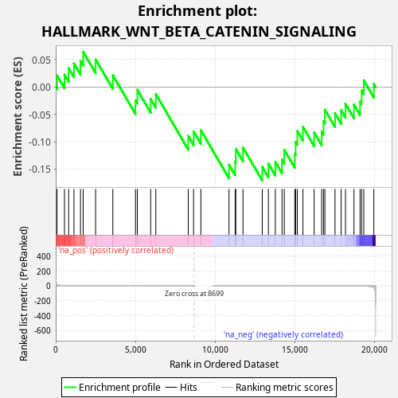
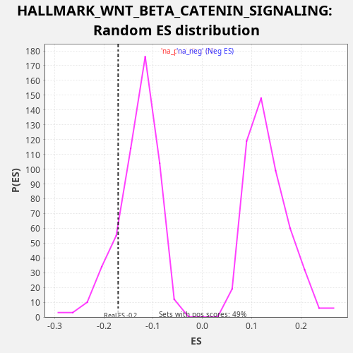

| Dataset | rnk |
| Phenotype | NoPhenotypeAvailable |
| Upregulated in class | na_neg |
| GeneSet | HALLMARK_WNT_BETA_CATENIN_SIGNALING |
| Enrichment Score (ES) | -0.17105566 |
| Normalized Enrichment Score (NES) | -1.3011484 |
| Nominal p-value | 0.16242662 |
| FDR q-value | 0.22094606 |
| FWER p-Value | 0.985 |

| SYMBOL | RANK IN GENE LIST | RANK METRIC SCORE | RUNNING ES | CORE ENRICHMENT | |
|---|---|---|---|---|---|
| 1 | HEY1 | 80 | 16.639 | 0.0210 | No |
| 2 | PPARD | 551 | 2.500 | 0.0226 | No |
| 3 | SKP2 | 812 | 1.369 | 0.0346 | No |
| 4 | AXIN1 | 1145 | 0.803 | 0.0431 | No |
| 5 | DKK1 | 1556 | 0.443 | 0.0476 | No |
| 6 | FZD1 | 1725 | 0.360 | 0.0642 | No |
| 7 | WNT6 | 2505 | 0.169 | 0.0504 | No |
| 8 | FZD8 | 3587 | 0.070 | 0.0215 | No |
| 9 | NCSTN | 5010 | 0.022 | -0.0244 | No |
| 10 | DVL2 | 5126 | 0.020 | -0.0052 | No |
| 11 | NOTCH4 | 5964 | 0.009 | -0.0219 | No |
| 12 | MYC | 6286 | 0.007 | -0.0129 | No |
| 13 | CTNNB1 | 8326 | 0.000 | -0.0896 | No |
| 14 | FRAT1 | 8660 | 0.000 | -0.0812 | No |
| 15 | HEY2 | 9116 | 0.000 | -0.0789 | No |
| 16 | AXIN2 | 10887 | -0.001 | -0.1421 | No |
| 17 | MAML1 | 11269 | -0.002 | -0.1361 | No |
| 18 | KAT2A | 11309 | -0.002 | -0.1131 | No |
| 19 | NUMB | 11761 | -0.003 | -0.1106 | No |
| 20 | PSEN2 | 12975 | -0.011 | -0.1461 | Yes |
| 21 | GNAI1 | 13357 | -0.015 | -0.1401 | Yes |
| 22 | RBPJ | 13795 | -0.020 | -0.1368 | Yes |
| 23 | JAG1 | 14214 | -0.028 | -0.1327 | Yes |
| 24 | NOTCH1 | 14356 | -0.030 | -0.1147 | Yes |
| 25 | NCOR2 | 15015 | -0.045 | -0.1225 | Yes |
| 26 | NKD1 | 15070 | -0.047 | -0.1002 | Yes |
| 27 | CUL1 | 15175 | -0.051 | -0.0804 | Yes |
| 28 | ADAM17 | 15526 | -0.063 | -0.0729 | Yes |
| 29 | PTCH1 | 16230 | -0.098 | -0.0829 | Yes |
| 30 | JAG2 | 16702 | -0.135 | -0.0814 | Yes |
| 31 | WNT5B | 16817 | -0.146 | -0.0621 | Yes |
| 32 | HDAC11 | 16906 | -0.154 | -0.0415 | Yes |
| 33 | LEF1 | 17542 | -0.247 | -0.0481 | Yes |
| 34 | HDAC5 | 17926 | -0.331 | -0.0422 | Yes |
| 35 | DLL1 | 18199 | -0.426 | -0.0308 | Yes |
| 36 | HDAC2 | 18731 | -0.727 | -0.0323 | Yes |
| 37 | CCND2 | 19114 | -1.193 | -0.0263 | Yes |
| 38 | CSNK1E | 19212 | -1.395 | -0.0062 | Yes |
| 39 | TP53 | 19348 | -1.823 | 0.0121 | Yes |
| 40 | TCF7 | 19981 | -25.550 | 0.0056 | Yes |

{kind=link}
{kind=link}